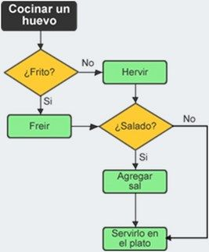

Los fundamentos de programación son las bases comunes a todos los programas. Es lo primero que tendrás que aprender incluso antes de elegir el programa con el que quieres programar.
Lo primero que tienes que saber es que el ordenador es una máquina eléctrica y solo entiende el llamado código binario (1 y 0).
1 = hay corriente
0 = No hay corriente
Este es su lenguaje. Entendernos con él mediante este código es muy difícil, por eso los lenguajes de programación se dividen en dos tipos diferentes dependiendo de su cercanía al lenguaje del ordenador.
Veamos un ejemplo:
Un algoritmo para cocinar un huevo para otra persona sería:
- Pregunto si quiere el huevo frito.
- Si me dice que si, lo frio, si me dice que no, lo hago hervido.
- Una vez cocinado le pregunto si quiere sal en el huevo.
- Si me dice que no lo sirvo en el Plato. Si me dice que si le hecho sal y después lo sirvo en el plato.
Ahora que ya sabemos todos los pasos, mediante el algoritmo, podemos hacer un esquema con estos pasos a seguir. Este esquema será el Diagrama de Flujo.
Por ejemplo si queremos escribir algo en pantalla, en pseudocódigo podríamos poner:
Escribir "Hola" o Escribir 20+30.
También podemos usar:
mostrar por pantalla "Hola"